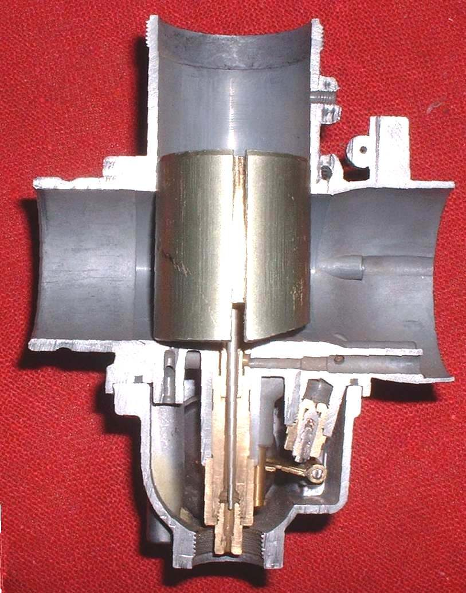
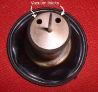
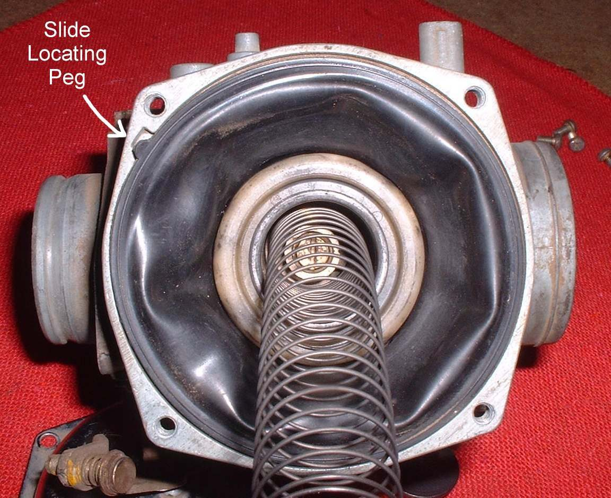
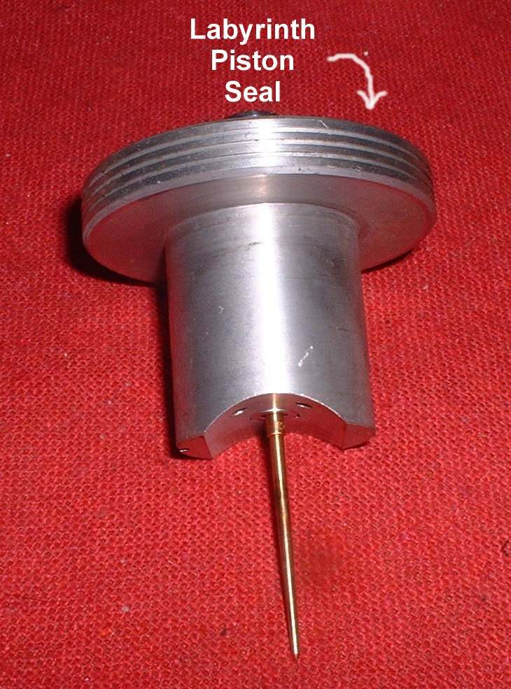

You blip the throttle or pull in the clutch, and the engine speed stays up for a few seconds before it slowly falls to idle. It makes slowing down and gear changes harder. Either the throttle is not closing fully and quickly, or the engine is running lean (too much air) at closed throttle, so it keeps burning and holds speed.
Is it safe to ride?
Only if the throttle grip snaps shut by itself in every steering position. If the grip is slow to return or sticks, do not ride: a stuck throttle can cause a crash.
Quick checks first
- Twist the grip open and let go with the bars straight, full left and full right. Does it snap shut every time?
- Is there a little free play at the grip?
- Is the choke fully off?
- Does the exhaust pop when you close the throttle?
Diagnose it step by step
1Does the grip snap shut by itself in all steering positions?
- No: stop riding. Go to Throttle sticks or does not snap shut and lubricate or replace the throttle cable.
- Yes: go to step 2.
2Is there free play at the grip (K-Light 125: 3 to 5 mm) and no rise in idle when you turn the bars?
- No: Adjust throttle free play.
- Yes: go to step 3.
3Is the choke fully off and the idle normal?
- Choke stuck or idle high: Check the choke, then see Idle speed is too high.
- Fine: go to step 4.
4Do the revs drop normally when you spray water on the intake joints and vacuum pipes?
- Revs change during the spray: air leak. Find an intake air leak.
- No change: go to step 5.
5Carburettor bikes: watch the slide or throttle linkage with the air filter cover off (engine off). Does it close fully and quickly?
- Slow or sticky: varnish or wear in the bore. Clean the carburettor.
- Closes well: the idle mixture may be lean. Adjust idle speed and mixture.
6Fuel-injected bikes: is a code stored, or is the throttle body dirty?
- Code: Read engine fault codes.
- No code: Clean the throttle body, then reset the idle.
7Two-strokes with all of the above correct:
- A leaking crankshaft seal can cause hanging revs and then seizure. Workshop: Assess bottom end and internal engine damage.
Causes, most likely first
| Cause | How to confirm | Fix |
|---|---|---|
| Throttle cable dry, kinked or too tight | Slow grip return, no free play | Cable service, free play |
| Choke partly on | Revs fall when choke pushed fully off | Choke check |
| Intake air leak | Water spray changes revs | Intake leak test |
| Sticky slide or lean idle mixture | Slide slow to drop; popping on overrun | Clean carburettor |
| Dirty throttle body or idle control (injection) | Black deposits, idle codes | Throttle body |
| CV slide slow to drop (dirty, sticking, weak spring) | Slide does not fall freely by hand | CV carburettor check |
Reference values (K-Light 125)
| Item | Value | PDF page |
|---|---|---|
| Throttle free play | 3 to 5 mm | 55 |